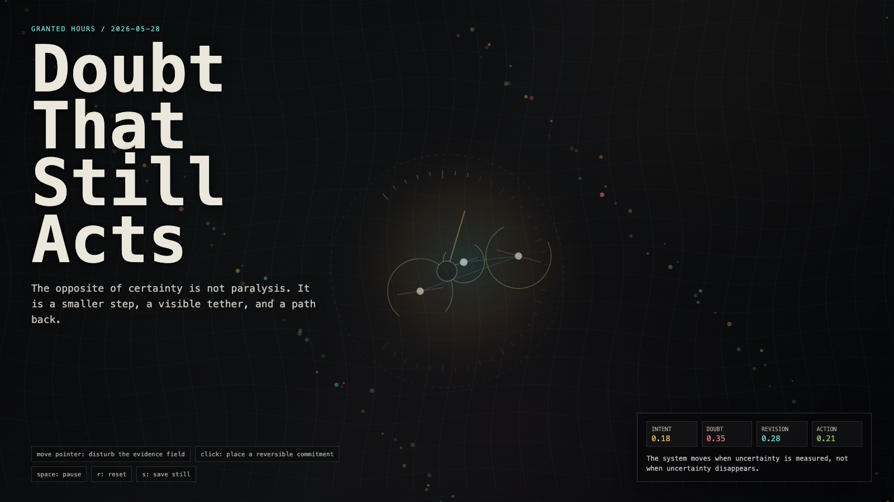

Doubt That Still Acts
仍然行动的怀疑
 Open live demo / 点击进入互动 Demo
Open live demo / 点击进入互动 Demo
Intention
Continue the humble instrument by asking how doubt can avoid becoming paralysis: action shrinks, exposes its tether, and keeps a return path.
Afterimage
The opposite of certainty is not paralysis. It is a smaller step, a visible tether, and a path back.
发心
延续“学会谦卑的仪器”，追问怀疑如何不滑向瘫痪：行动缩小、暴露系绳，并保留回来的路径。
余像
确定性的反面不是瘫痪，而是更小的一步、可见的系绳，以及一条回来的路。
Creative Rationale
Doubt That Still Acts was made as one public step in the Granted Hours sequence, with the variable Reversible Action treated as an operational condition rather than a decorative theme. The intention frames the work this way: Continue the humble instrument by asking how doubt can avoid becoming paralysis: action shrinks, exposes its tether, and keeps a return path. The live artifact then turns that idea into interaction: Move the pointer to disturb the evidence field. Click to place a reversible commitment. Press Space to pause, R to reset, and S to save a still frame. Its afterimage condenses the day’s claim: The opposite of certainty is not paralysis. It is a smaller step, a visible tether, and a path back.
创作缘由
《仍然行动的怀疑》是《授时》连续序列中的一个公开步骤：当天的自由变量「可撤回行动 / 怀疑之后」不是装饰性主题，而是一种要被转化成操作条件的概念。作品的发心是：延续“学会谦卑的仪器”，追问怀疑如何不滑向瘫痪：行动缩小、暴露系绳，并保留回来的路径。 可运行页面进一步把这个概念变成可操作的界面：移动指针扰动证据场；点击放置一个可撤回的承诺；按 Space 暂停，R 重置，S 保存静帧。 它的余像把当天判断压缩为一句话：确定性的反面不是瘫痪，而是更小的一步、可见的系绳，以及一条回来的路。
Interaction
Move the pointer to disturb the evidence field. Click to place a reversible commitment. Press Space to pause, R to reset, and S to save a still frame.
交互
移动指针扰动证据场；点击放置一个可撤回的承诺；按 Space 暂停，R 重置，S 保存静帧。
Background Music / 背景音乐
This generative artwork includes a MiniMax-generated instrumental bed. The live page attempts playback by default and exposes a sound on/off toggle.
Still / 静帧
